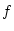
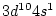
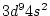
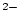
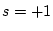
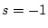
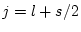
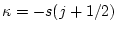

In sections (6.1-6.6) we describe the initial utility programs. These programs are used to set up a calculation.
This program uses the case.struct file (see 4.3) in which the atomic positions in the unit cell are specified, calculates the nearest neighbor distances of all atoms, and checks that the corresponding atomic spheres (radii) are not overlapping. If an overlap occurs, an error message is shown on the screen. In addition, the next nearest-neighbor distances up to  times the nearest-neighbor distance ( is provided interactively) are written to an output file named case.outputnn. It is highly recommended in many cases that you change your sphere sizes and NOT use the default of 2.0. An increase from 2.0 to 2.1 may already result in drastically reduced computing time. More recommendations are given in chapter 4.3.
nn also checks if equivalent atoms are specified correctly in case.struct. At the bottom of case.outputnn the coordination shell-structure is listed and from that a comparison with the input is made verifying that equivalent atoms really have equivalent environments. If this is not the case, an ERROR will be printed and a new structure file case.struct_nn is generated. You have to recheck your input and then decide whether you want to accept the new structure file, or reject it (because the equivalency may just be an artefact due to a special choice of lattice parameters). It also may be that you have made a simple input error. If you want to force two atoms of the same kind (e.g. 2 Fe atoms) to be nonequivalent (e.g. because you want to do an antiferromagnetic calculation), label the atoms as ``Fe1'' and ``Fe2'' in case.struct.
Thus this program helps to generate proper struct-files especially in the case of artificial unit cells, e.g. a supercell simulating an impurity or a surface.
The program nn is executed by invoking the command:
nn nn.def or x nn
This program was contributed by:
![\framebox{
\parbox[c]{12cm}{
Bogdan Yanchitsky and Andrei Timoshevskii \\
...
...ilinglist. If necessary, we will communicate
the problem to the authors.}
}
}](img151.png)
It was published in Yanchitsky and Timoshevskii 2001, and is written in C.
This program uses information from case.struct (lattice type, lattice constants, atomic positions) and determines the spacegroup as well as all pointgroups of non-equivalent sites. It uses the nuclear charges Z or the "label" in the 3rd place of the atomic name (Si1, Si2) to distinguish different atoms uniquely. It is able to find possible smaller unit cells, shift the origin of the cell and can even produce a new struct file case.struct_sgroup based on your input case.struct with proper lattice types and equivalency. It is thus most usefull in particular for ``handmade'' structures.
For more information see also the README in SRC_sgroup.
The program sgroup is executed by invoking the command:
sgroup -wi case.struct [-wo case.struct_sgroup] case.outputsgen or x sgroup
This program uses information from case.struct (lattice type,
atomic positions). If NSYM was set to zero it generates the space
group symmetry operations and writes them to case.struct_st to
complete this file. Otherwise (NSYM  0) it compares the generated
symmetry operations with the already present ones. If they disagree a
warning is given in the output. In addition the point group of each
atomic site is determined and the respective symmetry operations and
LM values of the lattice harmonics representation are printed. The
latter information is written into case.in2_sy, while the
local rotation matrix, the positive or negative IATNR values and the
proper ISPLIT parameter are written to case.struct_st. (See
appendix A and Sec. 4.3).
0) it compares the generated
symmetry operations with the already present ones. If they disagree a
warning is given in the output. In addition the point group of each
atomic site is determined and the respective symmetry operations and
LM values of the lattice harmonics representation are printed. The
latter information is written into case.in2_sy, while the
local rotation matrix, the positive or negative IATNR values and the
proper ISPLIT parameter are written to case.struct_st. (See
appendix A and Sec. 4.3).
The program symmetry is executed by invoking the command:
symmetry symmetry.def or x symmetry
lstart is a relativistic atomic LSDA code originally written by Desclaux (69, 75) and modified for the present purpose. Internally it uses Hartree atomic units, but all output has been converted to Rydberg units. lstart generates atomic densities which are used by dstart to generate a starting density for a scf calculation and all the input files for the scf run: in0, in1, in2, inc and inm (according to the atomic eigenvalues). In addition it creates atomic potentials (which are truncated at their corresponding atomic radii and could be used to run lapw1) and optional atomic valence densities, which can be used in lapw5 for a difference density plot. The atomic total energies are also printed, but it can only be used for cohesive energy calculations of light elements. Already for second-row elements the different treatment of relativistic effects in lstart and lapwso yields inconsistent data and you must calculate the atomic total energy consistently by a supercell approach via a ``bandstructure calculation (Put a single atom in a sufficiently large fcc-type unit cell).
If the program stops with some lines:
NSTOP= .....
in case.outputst, this means, that a proper solution for at least one orbital could not be obtained. In such a case the input must be changed and one should provide different occupation numbers for these states (e.g. Cu can not be started with , but it works with ).
Warnings about the radial mesh can usually be ignored. They can be avoided by larger dimension parameters NPT and NPT00, so that the radial mesh will reach up to RMAX0.
The program lstart is executed by invoking the command:
lstart lstart.def or x lstart [-sigma]
The files case.rsp(updn) are generated and contain the atomic
(spin) densities, which will be used by DSTART later on.
Using -sigma generates case.inst_sigma with modified input to
generate case.sigma used for difference densities (see below).
The following parameters are defined in file param.inc
(static and not allocatable arrays):
| NPT | total number of radial mesh points, must be gt.(NRAD+NPT00), where NRAD is the number of mesh-points up to RMT specfied in case.struct. |
| NPT00 | max. number of radial mesh points beyond RMT |
| RMAX0 | max. distance of radial mesh |
When running lstart you will first be asked interactively to specify an XC-potential switch. Currently 5 (LSDA, Perdew and Wang 92) as well as 13 and 14 (two GGAs, Perdew et al. 96 and Perdew et al. 92, respectively) are officially supported, but 13 is recommended.
In addition the program asks for an energy cut-off, separating core from valence states. Usually -6.0 Ry is a good choice, but you should check for each atom how much core charge leaks out of the sphere (bottom of case.outputs). If this is the case one should lower this energy cut-off and thus include these low lying states into the valence region.
The rest of the input is described in the sample input below.
Note: Only the data at the beginning of the line are read whereas
the comment describes the respective orbitals. This file can
be generated automatically in w2web using ``RunPrograms
 Struct Generator'' or with the script instgen_lapw. To edit this file by hand choose
``View/Edit
Struct Generator'' or with the script instgen_lapw. To edit this file by hand choose
``View/Edit  Input Files'' and choose case.inst.
Input Files'' and choose case.inst.
------------------ top of file: case.inst ------------------- ZINC Ne 6 (inert gas, # OF VALENCE ORBITALS not counting spin) 3,-1,1.0 N ( N,KAPPA,OCCUP; = 3S UP, 1 ELECTRON) 3,-1,1.0 N 3S DN 3,-2,2.0 N 3P UP 3,-2,2.0 N 3P DN 3, 1,1.0 N 3P*UP 3, 1,1.0 N 3P*DN 3,-3,3.0 P 3D UP 3,-3,3.0 P 3D DN 3, 2,2.0 P 3D*UP 3, 2,2.0 P 3D*DN 4,-1,1.0 P 4S UP 4,-1,1.0 P 4S DN **** END OF Input **** END OF Input ------------------- bottom of file ---------------------------
Interpretive comments follow:
| title | ||
| keyword | The keyword Watson enables a stabilization of negative ions using a ``Watson''-sphere of radius R-wat with charge Q-wat, which must be given in the next line when this keyword is specified. | |
| The keyword PRATT enables a scf mixing using standard PRATT scheme. It might be usefull if a certain atomic configuration does not converge with the standard mixing scheme and requires a (usually quite small) mixing factor, which must be given in the next line when this keyword is specified. |
| config | specifies the core state configuration by an inert gas
(He, Ne, Ar, Kr, Xe, Rn) and the number of (valence) orbitals
(without spin). (In the example given above one could also use
Ar 3 and omit the |
| n | the principle quantum number | |
| kappa | the relativistic quantum number (see below) | |
| occup | occupation number (per spin) | |
| plot | P specifies that the density of the respective orbital is written to the file case.sigma, which can be used for difference density plots in lapw5. N or an empty field will exempt density of the respective orbital from being printed to file. |
| R-wat | radius of a charged sphere used to stabilize otherwise unstable negative ions (e.g. 2.5 for O) | |
| Q-wat | charge of the stabilizing sphere, (e.g. 2 for O) |
The quantum numbers are defined as follows (see e.g. Liberman et al 65):
Spin quantum number:  or 
Orbital quantum number 
Relativistic quantum number

This program generates the k-mesh in the irreducible wedge of the Brillouin zone (IBZ) on a special point grid, which can be used in a modified tetrahedron integration scheme (Blöchl et al 1994).
kgen needs as interactive input the total number of k-points in the BZ
and, if inversion symmetry is not present, asks whether or not it
should include this symmetry when generating the k-mesh. One should
usually add inversion here except for certain magnetic cases including SO interaction. If symmetry permits, it further asks
whether or not the k-mesh should be shifted away from high symmetry
directions. The file case.klist is used in lapw1 and
case.kgen is used in tetra and lapw2, if the EF
switch is set to TETRA, i.e. the tetrahedron method for the k-space
integration is used. For the format of the case.klist see page
![[*]](crossref.png) .
.
kgen kgen.def or x kgen [-so]
With the switch -so it uses a file case.ksym (usually generated by symmetso instead of case.struct.
The following parameters are used in main.f, ord1.f (static arrays):
| IDKP | number of inequivalent k-points (like NKPT in other programs) |
| NWX | internal parameter, must be increased for very large k-meshes |
| INDEXM | internal parameter, must be increased for very large k-meshes |
This program generates an initial crystalline charge density case.clmsum by a superposition of atomic densities (case.rsp) generated with lstart. Information about LM values of the lattice harmonics representation and number of Fourier coefficients of the interstitial charge density are taken from case.in1 and case.in2. In the case of a spin-polarized calculation it must also be run for the spin-up charge density case.clmup and spin-down charge density case.clmdn.
The program dstart is executed by invoking the command:
dstart dstart.def or x dstart [-up|dn -c]
The following parameters are collected in file param.inc, but usually need not to be changed:
| IPINST | number of r-mesh points beyond Rmt (should be NPT00 as in LSTART) |
| NCOM | number of LM terms in density |
| NRAD | number of radial mesh points |
| NSYM | order of point group |